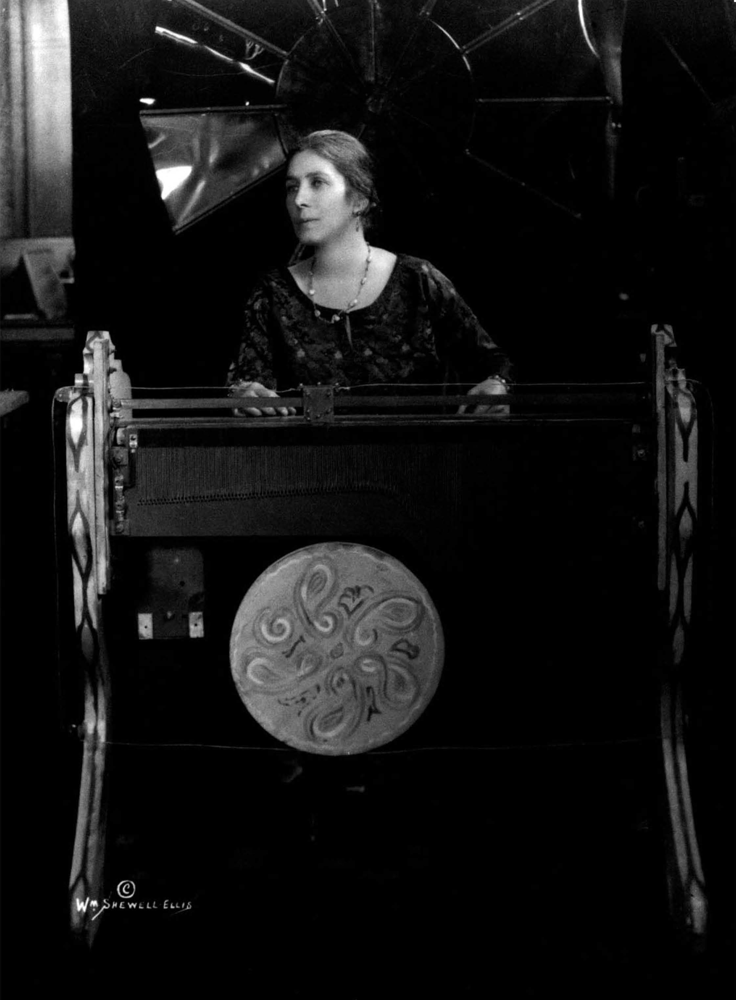

PIONERAS
Mary Hallok Greenewlt
Inventora pianista
El nombre de su arte, Nourathar, fue adaptado de las palabras árabes para luz (nour), y esencia de (athar). A diferencia de anteriores inventores de la música-color como el pintor A. Wallace Rimington, Hallock-Greenewalt no produjo una definición estricta de correspondencia entre colores específicos y notas particulares, sosteniendo en su lugar que estas relaciones eran inherentemente variables y reflejaban el temperamento y la habilidad del intérprete.
Su órgano de color, al cual bautizó "Sarabet" en homenaje a su madre, requirió la invención de un número de tecnologías nuevas. Recibió nueve patentes de la Oficina de Patentes de los Estados Unidos por ellas. Entre estos dispositivos se cuenta una variedad no lineal de reostato, una patente que fue infringida por General Electric y otras compañías. Greenewalt los demandó por dicha infracción y ganó en 1934. El Sarabet pasó por una serie de refinamientos entre 1916 y 1934. En 1946 publicó un libro sobre el arte de su invención llamado Nourathar: El Bello Arte de Tocar Luz-Color.